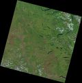
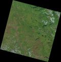

Nephanalysis
Airing out some of those trees that he killed.

Land Classification
This project used PCI Geomatica, now Catalyst, to take satellite imagery, apply training sites, and classify the landscape.
 

2019 Transit Extension Crowdsource and Social Awareness

For this project, driver statistics were the primary focus. By observing high traffic volume and high GO ridership, 5 areas of interest were selected to check the suitablity for a GO transit extension. Drivers with a commute over 60 minutes were given the greatest consideration. Suitability(%) = .25*AADT16+.2*CoC+.2*Co45+.3*Co60+.05*GOr, where AADT16 is the Annual Average Daily Traffic counts for 2016, CoC is the commute outside the census division, Co45, a commute over 45 minute, and Co60 is commute over 60 minutes, all collected from the 2016 census. Finally, GOr, is the GO ridership data.
Using the data available, a web map was produced, found here. Looking at the results, Bowmanville, Uxbidge, and Orangeville all have fairly similar suitability. Next time, more complete results may be generated by placing more focus on these 3 towns and adding more suitability conditions, such as traffic farther into the commute of those commuting for >60 minutes, or adding collision or truck traffic.
Given the most suitable areas, it can be seen that there is thought of where GO transit should expand. While this analysis has given suitable locations to review, it is good to note that there are other factors that play into the suitability. Orangeville, Bowmanville, Uxbridge, Port Perry and Orillia all have good reasons for a GO line extension into their areas. Metrolix has plans of extension and they will continue to accommodate the commuter rush, especially focusing on trains in and out of the GTA. Incorperating crowdsourcing into the data helps take into consideration the commuters ideal trip.